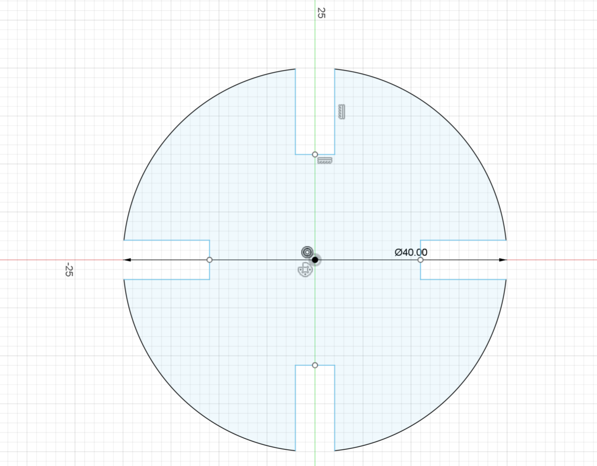
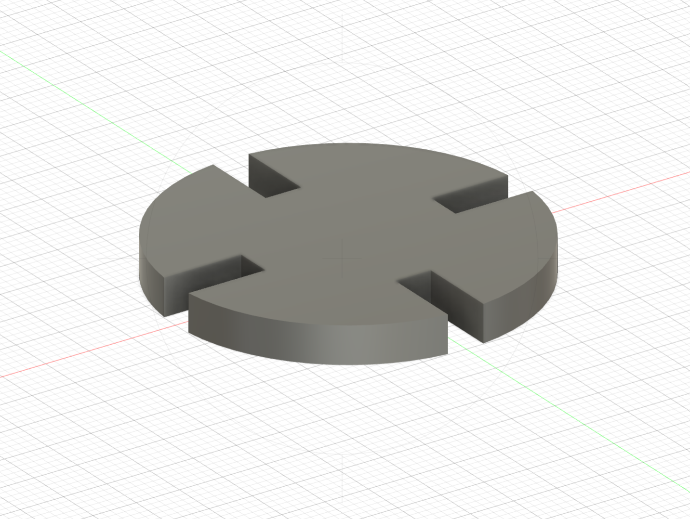
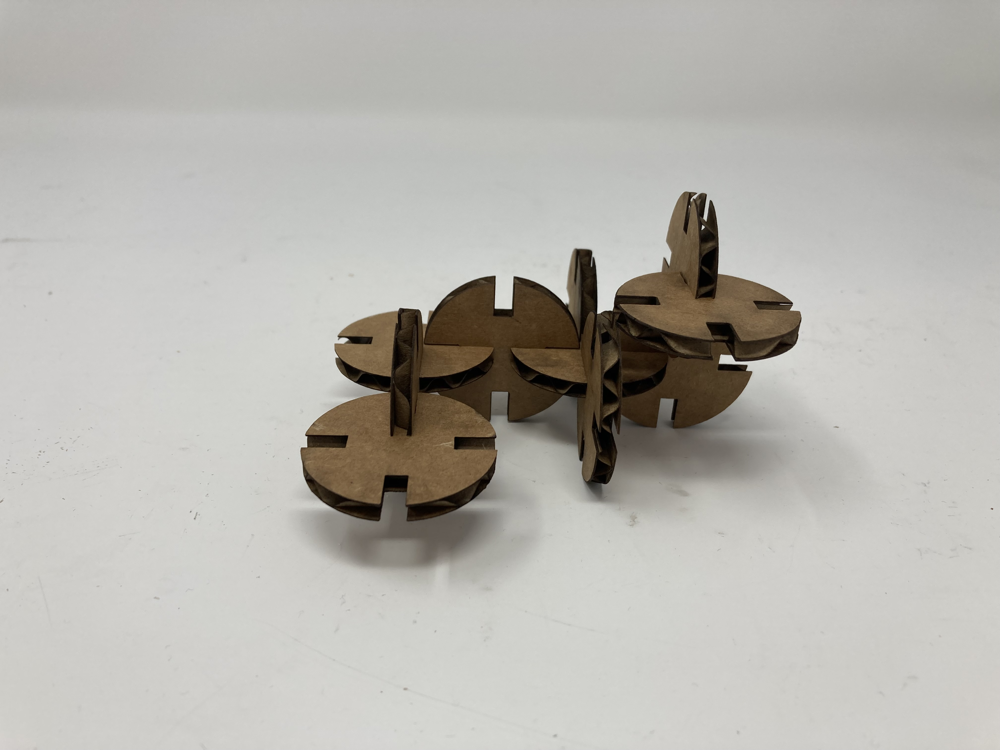
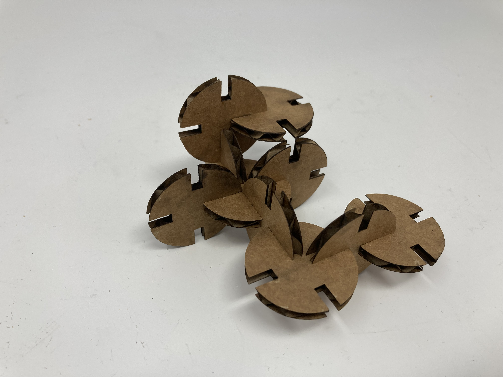
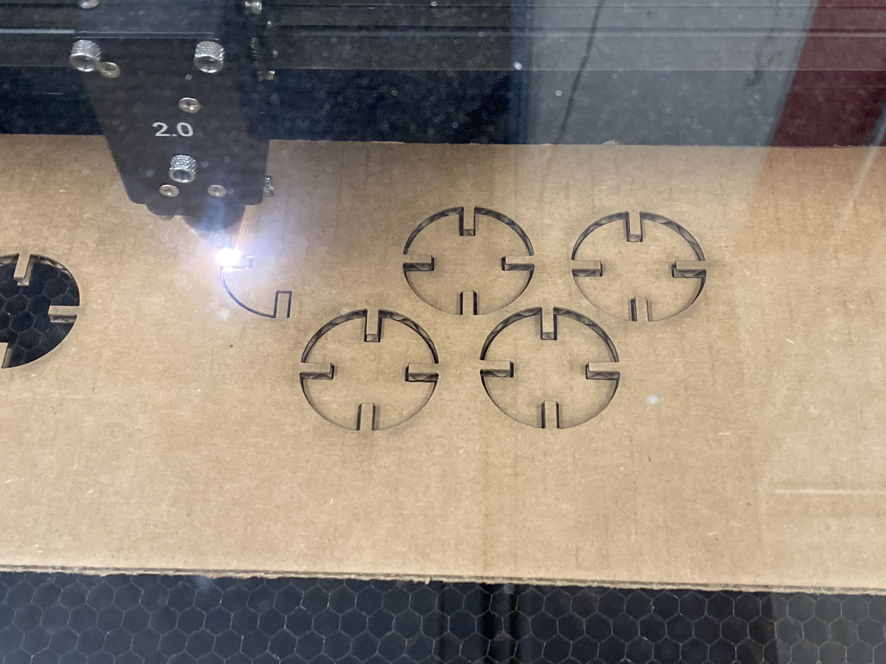

<br>
#### Week 1: Design and Cutting
This is my initial Fusion360 design of my press fit model. The circle has a diameter of 40mm, with each notch having the width of 4.1mm. The cardboard material is around 4.2mm thick, so 0.1mm is an estimation of how much kerf there will be.


This is the lazer cut result of the pressfit puzzle. The 0.1mm kerf prediction was quite accurate, causing just enough friction for the pressfit to stay together, but not too much to cause any fitment issues.


<center>

</center>
Go home: [link](../index.html).